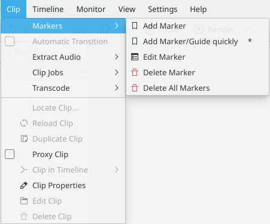

Clip Menu¶
The functions controlled from this menu affect the clip that is selected in the timeline. This is in contrast to Project Menu functions which affect the clips selected in the Project Bin.
Markers Menu Item¶
The menu allows you to Add, Edit and Delete Clip Menu - Markers
Automatic Transition¶
When a transition is selected, this menu item allows you toggle the transition to and from Transitions mode.
Other Items¶
The other menu items which appear when in the Clip menu are also available from the View>Project Tree.
Clip Jobs
automaticscenesplit
duplicate_clip_with_speed_change
Contents: